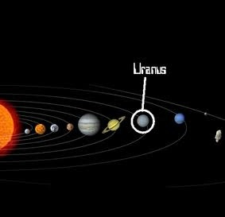

Уран е седмата планета од Сонцето. Таа е гасен џин и е трета по големина по дијаметар и четврта по маса. Именувана е по Уран, грчкиот бог на небото и прататкото на сите богови. Неговиот симбол е или Uranus's astrological symbol.svg (астролошки) или Астрономски симбол на Уран (астрономски). Првиот симбол доаѓа од името на Вилијам Хершел, кој го открил Уран. Вториот симбол е комбинација на направите на Сонцето и на Марс, бидејќи Уран бил персонификација на рајот во грчката митологија, доминиран од светлината на Сонцето и моќта на Марс. Тоа е исто така, алхемиски симбол за платина. Уран околу својата оска се завртува за 17,2 часа,а околу Сонцето за 84,51 година.Уран има 16 сателити.Најпознати и најголеми од сите се Титанија и Оберон.

Иако нема добро дефинирана цврста површина во интериорот на Уран, најнадворешниот дел од гасовната обвивка која може да се набљудува од далеку се нарекува атмосфера. Набљудувањето може да пробие 300km под нивото со притисок од 1 бар (100kPa) со температура од 320K. Атмосферата може да се подели на 3 дела: тропосфера(помеѓу -300 и 50km), стратосфера(помеѓу 50 и 4000km) и термосфера (помеѓу 4000 и 50000km). Не е присутна мезосфера.
Уран го заобиколува сонцето еднаш на 84 години. Просечната оддалеченост е 3 милијарди km (20 астрономски единици). Разликата помеѓу минималното и максималното растојание од сонцето е 1,8 астрономски единици (втора најголема после Плутон). Јачината на сончевата светлина е 400 пати помала од таа на Земјата. Периодот на ротација на Уран изнесува 17 часа и 14 минути. Како и кај сите гасовити џинови, присутни се силни ветрови во горните слоеви на уран во насока на ротацијата.
Наваленост на оската на ротација
Оската на ротација на Уран е скоро паралелна со рамнината на Сончевиот Систем, со наваленост ос 99,77 степени. Тоа и дава сезонски промени тотално различни од било која друга планета во Сончевиот Систем. За време на долгоденица еден пол е константно свртен кон сонцето а другиот е константно свртен во спротивна насока. Само тесен појас околу екваторот искусува деноноќен циклус, но со сонцето ниско на хоризонтот. Секој пол добива околу 42 години континуирана светлина па 42 години континуиран мрак.
Дознај повеќе за Уран
| Апхел |
20.11 AЕ (3,008 Gm) |
| Перихел |
18.33 AЕ (2,742 Gm) |
| Голема полуоска |
19.2184 AЕ (2,875.04 Gm) |
| Орбитален период |
17 h 14 min 24 s |
| Ѕвезден период |
84.0205 г 30,688.5 ден |
| Просечна орбитална брзина |
2.59 km/s |
| Познати сателити |
27 |